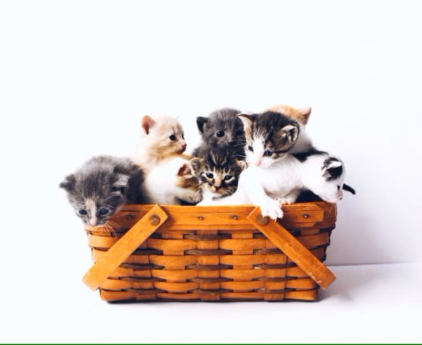

d1
d2
d3
d4
d5
Welcome to Cat Lovers!
We are passionate about cats and love sharing information, photos, and stories about our feline friends.
Feel free to explore our site and learn more about the wonderful world of cats!
We believe that cats are not just pets, but family members who bring joy and companionship to our lives.
Things Cats love
- laser pointers
- Playing
- scratch posts
- sleeping
Cat Breeds
- Siamese
- Persian
- Maine
- Ragdoll
- British Shorthair
More about cats
Cats are cute and can be kept as pets. They are very friendly
They are also very independent and can be left alone for a while.
They are also very playful and love to chase things.
Find down here cute kittens 